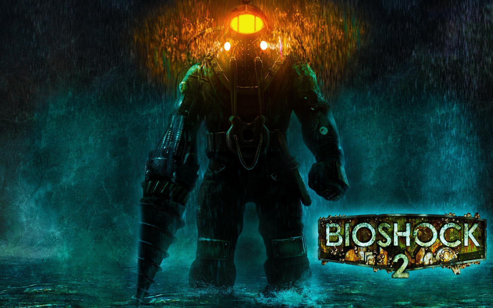
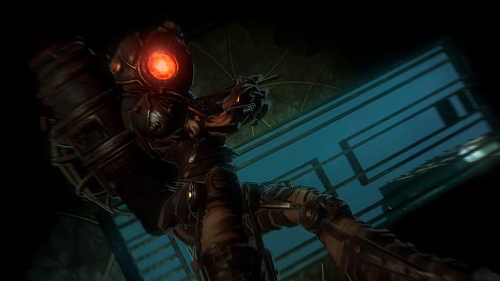

¿Cuando salio?
BioShock 2 es el segundo juego FPS de la franquicia BioShock. Fue publicado el 9 de febrero de 2010 por 2K Games.
¿De que trata?
El personaje principal, llamado por los habitantes de Rapture "Johnny Arriba", pasó a ser un Big Daddy conocido como "sujeto Delta". No tardaron mucho tiempo en vincularle a una Little Sister. Buscaron a una niña del orfanato y la convirtieron en una recolectora de ADAM para así poder vincularla al sujeto Delta. La identidad de la niña a quien usaron como experimento era Eleanor Lamb.
Diferencias entre 1 y 2
Uno de los mejores cambios que BioShock 2 hace al combate del original es la incorporación de la empuñadura dual . Esto significa que puedes usar un plásmido con una mano mientras disparas un arma poderosa con la otra. Es una característica divertida que funciona muy bien.